Vision¶
El sensor de visión Sentry2 integra una variedad de algoritmos de visión artificial para reconocer objetos sin necesidad de estar conectado a una red WiFi, y el chip ESP8285-WiFi integrado puede realizar la función de reconocimiento de imágenes basado en la nube.
ID:1 Color¶
El usuario puede configurar desde una hasta 25 regiones para el reconocimiento del color y devolver el valor R(rojo),G(verde),B(azul) y la etiqueta de cada región. Se pueden configurar las coordenadas y el tamaño de cada región.
{kind=link}
- Etiqueta Color
Una etiqueta Color es un número que se utiliza para representar un color:
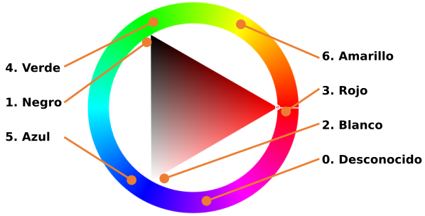
Etiqueta color
{kind=link}
- Parámetros
El usuario puede establecer regiones para el reconocimiento:
| Parámetro | Breve descripción |
|---|---|
| 1 | Coordenada X del centro de la región |
| 2 | Coordenada Y del centro de la región |
| 3 | Anchura de la región |
| 4 | Altura de la región |
| 5 | Ninguno |
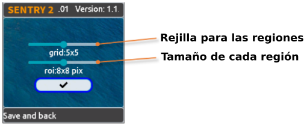
Parámetros
{kind=link}
Se ofrecen varios parámetros preestablecidos en la página de configuración de la interfaz de usuario:
- Rejilla, Grid(X x Y): 1x1, 2x2,3x3,4x4, 5x5, 1x10, 2x10, 6x1, 6x2
- Tamaño. Size(W x H): 2x2, 4x4, 8x8, 16x16, 32x32
NOTA:
Para representar un cuadrado en el sistema de coordenadas porcentuales, la anchura y la altura no son iguales, sino que se ajustan a la relación de aspecto 3:4. Por ejemplo, si la anchura de un cuadrado es del 12%, su altura h debe ser 12/3×4=16%. En el sistema de coordenadas absolutas, los tamaños de área de reconocimiento preestablecidos son : 1x1, 2x3, 3x4, 6x8, 9x12.
- Resultados
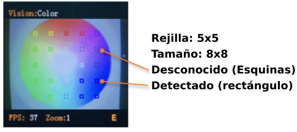
Resultados
{kind=link}
Habrá un recuadro continuo en la pantalla que identifica el color, y un recuadro de 4 esquinas que identifica un color desconocido.
| Resultado | Breve resumen |
|---|---|
| 1 | R, canal rojo, rango 0 a 255 |
| 2 | G, canal verde, rango 0 a 255 |
| 3 | B, canal azul, rango 0 a 255 |
| 4 | Ninguno |
| 5 | Etiqueta de color |
ID: 2 Blob (Borrón)¶
Encuentra un determinado bloque de color de una imagen y devuelve su coordenada y tamaño. Soporta detección multicolor y multiresultado.
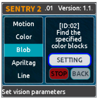
Blob
{kind=link}
- Parámetros
El usuario debe decidir en primer lugar qué color debe detectarse. La anchura y la altura de la pieza de color mínima pueden configurarse para reducir los resultados falsos:
| Parámetro | Breve resumen |
|---|---|
| 1 | Ninguno |
| 2 | Ninguno |
| 3 | Anchura mínima |
| 4 | Altua mínima |
| 5 | Etiqueta de color a detectar |
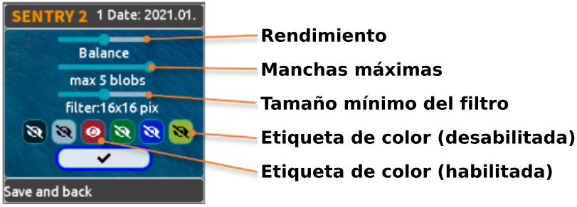
Parámetro
{kind=link}
Se proporcionan varios parámetros preestablecidos en la página de configuración de la interfaz de usuario:
- Nivel de rendimiento del algoritmo: Para seleccionar el rendimiento de Vision según los distintos requisitos de la aplicación: "Sensibilida", "Balance o Equilibrado" y "Precisión".
- Número máximo de bloques: admite de uno a cinco bloques para cada color.
- Tamaño mínimo del bloque:
- Sistema de coordenadas absoluto: 2x2, 4x4, 8x8, 16x16, 32x32, 64x64, 128x128 píxeles
- Sistema de coordenadas porcentual:1x1, 2x3, 3x4, 6x8, 9x12, 21x28, 42x56 %
-
Color a detectar: Se muestra un icono de ojo abierto si la etiqueta de color está activada.
-
Resultados
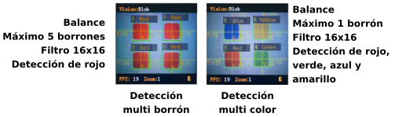
Resultado
{kind=link}
Resultados obtenidos:
| Resultado | Breve resumen |
|---|---|
| 1 | Coordenada X del centro del bloque |
| 2 | Coordenada Y del centro del bloque |
| 3 | Anchura del bloque |
| 4 | Altura del bloque |
| 5 | Etiqueta de color |
ID: 3 Marcador visual¶
El marcador visual o también llamado Apriltag; es un patrón bidimensional que se coloca en objetos físicos y se utiliza para ayudar a los sistemas informáticos a reconocer y rastrear la posición y orientación de objetos en el espacio.
En robótica es un tipo de etiqueta formada por una cuadrícula de cuadrados blancos y negros. Utilizada en aplicaciones de visión por ordenador.
Apriltag es un conjunto de casillas blancas y negras definidas. Los distintos códigos utilizan diferentes números de cuadrados. Cada patrón tiene una etiqueta predefinida.
En este articulo en inglés puedes encontrar mas información.
Encontrar los apriltags de una imagen, soporta las familias de codificación 16H5，25H9，36H11 y hasta 25 resultados. Es necesario decidir qué familia de codificación utilizar antes de activar esta visión, y sólo se puede procesar una familia
NOTA:
Esta modo de visión no se puede ejecutar al mismo tiempo que otros modos marcados con asteriscos.
Etiqueta
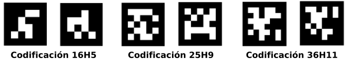
Familias Apriltags
{kind=link}
En el repositorio aprilTag-imgs de AprilRobotics tenemos colecciones de imágenes.
- Parámetros
Se proporcionan varios parámetros preestablecidos en la página de configuración de la interfaz de usuario:
- Nivel de rendimiento del algoritmo: Para seleccionar el rendimiento de Vision según los distintos requisitos de la aplicación: "Sensible", "Equilibrado" y "Preciso".
- Familia de codificación: admite "16H5"，"25H9"，"36H11".
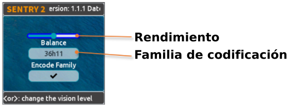
Parámetros
{kind=link}
- Resultados
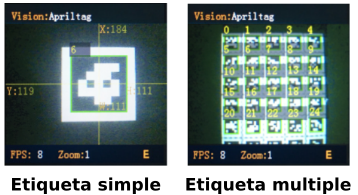
Resultado
{kind=link}
Resultados obtenidos:
| Resultado | Breve resumen |
|---|---|
| 1 | Coordenada X del centro de la etiqueta |
| 2 | Coordenada Y del centro de la etiqueta |
| 3 | Anchura de la etiqueta |
| 4 | Altura de la etiqueta |
| 5 | Etiqueta |
ID: 4 Línea¶
Encuentra una o hasta 5 líneas de una imagen y devuelve sus 2 coordenadas de puntos finales y grados. Si se trata de una curva, se devuelve un segmento de línea aproximado.
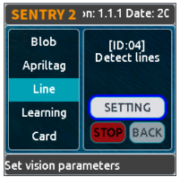
Línea
{kind=link}
- Parámetros
Se proporcionan varios parámetros preestablecidos en la página de configuración de la interfaz de usuario:
- Nivel de rendimiento del algoritmo: Para seleccionar el rendimiento de Vision según los distintos requisitos de la aplicación: "Sensible", "Equilibrado" y "Preciso".
- Máximo número de líneas: Rango entre 1 y 5.
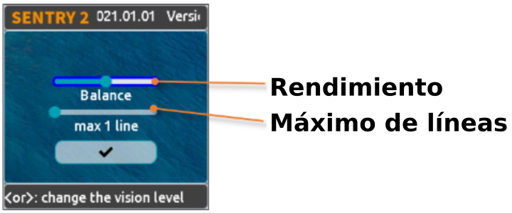
Parámetros
{kind=link}
- Resultados
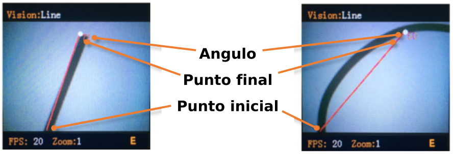
Resultado
{kind=link}
NOTA:
La horizontal hacia la derecha es de 0 grados, el valor se incrementa en sentido contrario a las agujas del reloj. Hacia arriba es de 90 grados, y la horizontal hacia la izquierda es de 180 grados.
{kind=link}
Se utilizan 5 colores diferentes (rojo, amarillo, verde, azul y morado) para distinguir las multilíneas.
| Resultado | Breve resumen |
|---|---|
| 1 | Coordenada X del punto final de la línea (superior) |
| 2 | Coordenada Y del final de la línea (superior) |
| 3 | Coordenada X del punto inicial de la línea (inferior) |
| 4 | Coordenada Y del punto inicial de la línea (inferior) |
| 5 | Grado de la línea |
ID: 5 Aprendizaje¶
Los objetos pueden ser entrenados y reconocidos. Hasta 25 datos de modelos se pueden guardar.
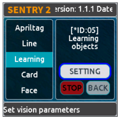
Aprendizaje
{kind=link}
- Parámetros
Se puede entrenar un nuevo objeto en la página de funcionamiento:
1.- Clic vertical (pulsar botón) en el joystick para iniciar el entrenamiento.
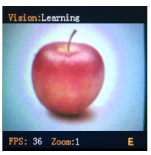
Iniciar entrenamiento
{kind=link}
2.- Se mostrarán en la pantalla 4 marcas de esquinas en rojo sobre unos dos segundos para que el usuario ajuste la cámara.
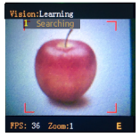
Marcas rojas
{kind=link}
3.- Si las 4 marcas de esquinas cambian a color verde significa que el sensor está parendiendo.
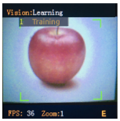
Marcas verdes
{kind=link}
4.- Las marcas se cambian a un rectángulo cuando el aprendizaje ha finalizado. Una etiqueta que se asigna de manera automática (El número de ID mas pequeño disponible) y un nombre se muestran en la pantalla.
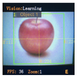
Rectángulo verde
{kind=link}
- Borrar todos los objetos
Mantener pulsado el joystick verticalmente durante más de 2 segundos en la página de funcionamiento.
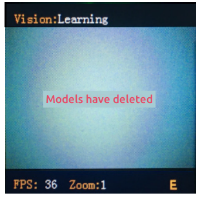
Borrar todos los objetos
{kind=link}
- Renombrar objetos
Podemos cambiar el nombre o eliminar el modelo entrenado en la página de configuración de la interfaz de usuario.
Para renombrarlo seguimos el siguiente proceso:
1.- Seleccionar el objeto en el menú de la izquierda.
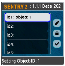
Seleccionar objeto
{kind=link}
2.- Clic derecho en el joystick y seleccionamos el lápiz y pulsamos el botón.
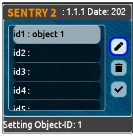
Seleccionar lápiz y pulsar
{kind=link}
3.- Renombramos utilizando el teclado virtual y nos situamos sobre el icono de check de la parte inferior derecha. El nombre no debe tener mas de 32 caracteres.
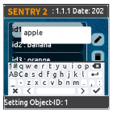
Teclado virtual
{kind=link}
4.- Hacemos clic sobre el icono Check para confirmar y volver.
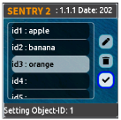
Confirmar
{kind=link}
Para borrar un objeto seguimos el siguiente proceso:
1.- Seleccionar el objeto en el menú de la izquierda.
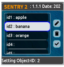
Seleccionar objeto a borrar
{kind=link}
2.- Clic derecho en el joystick y seleccionamos la papelera y pulsamos el botón.

Seleccionar papelera y pulsar
3.- Hacemos clic sobre el icono Check para confirmar y volver.
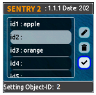
Confirmar borrado
{kind=link}
- Resultados
Vision sólo puede juzgar la existencia del objeto entrenado, pero no sus coordenadas ni su tamaño, por lo que la casilla de reconocimiento es un valor de salida fijo.
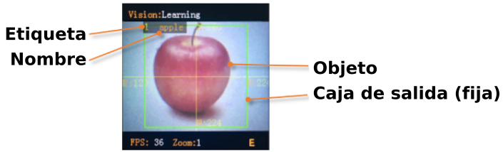
Resultado
{kind=link}
Resultados obtenidos:
| Resultado | Breve resumen |
|---|---|
| 1 | Fijado, 160 |
| 2 | Fijado, 120 |
| 3 | Fijado, 224 |
| 4 | Fijado, 224 |
| 5 | Etiqueta |
ID:6 Tarjeta¶
Reconocer una tarjeta especificada en la imagen y devolver sus coordenadas, tamaño, etiqueta y otra información. Incluye señales de tráfico, tarjetas de formas y tarjetas de números. Las etiquetas se muestran en la siguiente tabla.
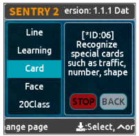
Tarjeta
{kind=link}
- Tráfico
| Etiqueta | Nombre | Etiqueta | Nombre |
|---|---|---|---|
| 1 | Adelante | 2 | Izquierda |
| 3 | Derecha | 4 | Cambio de sentido |
| 5 | Aparcar | 6 | Verde |
| 7 | Rojo | 8 | Velocidad 40 |
| 9 | Velocidad 60 | 10 | Velocidad 80 |
- Formas
| Etiqueta | Nombre | Etiqueta | Nombre |
|---|---|---|---|
| 11 | Check | 12 | Cruz |
| 13 | Circulo | 14 | Cuadrado |
| 15 | Triángulo | 16 | Mas (+) |
| 17 | Menos (-) | 18 | División |
| 19 | Igual |
- Números
| Etiqueta | Nombre | Etiqueta | Nombre |
|---|---|---|---|
| 20 | Número 0 | 21 | Número 1 |
| 22 | Número 2 | 23 | Número 3 |
| 24 | Número 4 | 25 | Número 5 |
| 26 | Número 6 | 27 | Número 7 |
| 28 | Número 8 | 29 | Número 9 |
- Parámetros
Ninguno
- Resultados
Vision puede reconocer varias tarjetas al mismo tiempo, y si la rotación de las tarjetas es de hasta 30 grados todavía se puede reconocer, pero no se deben girar demasiado.
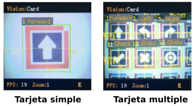
Resultado
{kind=link}
Resultados obtenidos:
| Resultado | Breve resumen |
|---|---|
| 1 | Coordenada X del centro de la tarjeta |
| 2 | Coordenada Y del centro de la tarjeta |
| 3 | Ancho de la tarjeta |
| 4 | Alto de la tarjeta |
| 5 | Etiqueta de la tarjeta |
ID:7 Rostro¶
Reconocer caras puede ser entrenado y serán reconocidas por Vision. Se pueden guardar datos de hasta 25 modelos. Es compatible con la detección de máscaras.
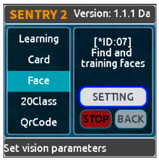
Rostro (Face)
{kind=link}
- Parámetros
Entrenando nueva cara
Se puede entrenar un nuevo objeto en la página de funcionamiento:
1.- "0 New Face" se muestra si se detecta una nueva cara. Hacemos clic en el joystick para iniciar el reconocimiento.
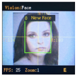
Comenzar reconocimiento cara
{kind=link}
2.- La etiqueta y el nombre se pueden cambiar mientras el reconocimiento de la cara está entrenandose.
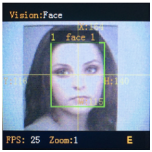
Etiqueta y nombre
{kind=link}
Borrar todas las caras
Una pulsación larga, de mas de dos segundos, del botón del joystick mientras estamos en la página de ejecución.
Para renombrar o borrar los modelos entrenados desde la interfaz de usuario se sigue el mismo procedimiento que en el apartado de aprendizaje.
- Resultados
Vision admite la detección de caras (cara nueva) y el reconocimiento de caras (cara entrenada) funcionando al mismo tiempo. A la cara nueva se le asignará la etiqueta 0. Especialmente, si se detecta un nuevo rostro con máscara, se mostrará "New face (mask)" ["Nuevo rostro (máscara)"] y la etiqueta se fijará en 200.
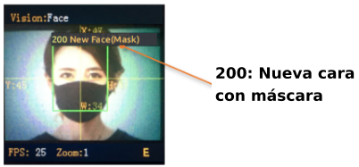
Resultado
{kind=link}
Resultados obtenidos:
| Resultado | Breve resumen |
|---|---|
| 1 | Coordenada X del centro de la cara |
| 2 | Coordenada Y del centro de la cara |
| 3 | Ancho de la cara |
| 4 | Alto de la cara |
| 5 | Etiqueta 0: nueva cara, 200: con máscara |
ID:8 20Class¶
Identifica 20 tipos comunes de objetos y devuelve su coordenada, tamaño y etiquetas, como se muestra en la siguiente tabla.
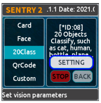
20Class
{kind=link}
| Etiqueta | Nombre | Etiqueta | Nombre | Etiqueta | Nombre | Etiqueta | Nombre |
|---|---|---|---|---|---|---|---|
| 1 | Avión | 2 | Bicicleta | 3 | Pájaro | 4 | Barco |
| 5 | Botella | 6 | Autobús | 7 | Coche | 8 | Gato |
| 9 | Silla | 10 | Vaca | 11 | Mesa de comedor | 12 | Perro |
| 13 | Caballo | 14 | Moto | 15 | Persona | 16 | Planta en maceta |
| 17 | Oveja | 18 | Sofá | 19 | Tren | 20 | Monitor de TV |
- Parámetros
Para seleccionar el nivel de rendimiento del algoritmo de Vision en función de los distintos requisitos de la aplicación: "Sensible", "Equilibrado" y "Preciso".
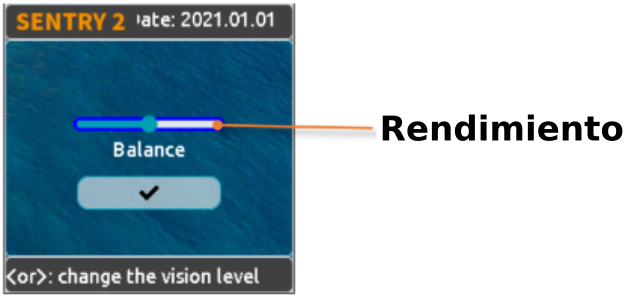
Parámetros
{kind=link}
- Resultados
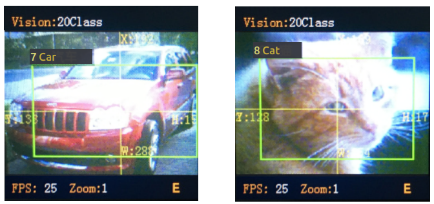
Resultado
{kind=link}
Resultados obtenidos:
| Resultado | Breve resumen |
|---|---|
| 1 | Coordenada X del centro del objeto |
| 2 | Coordenada Y del centro del objeto |
| 3 | Ancho del objeto |
| 4 | Alto del objeto |
| 5 | Etiqueta |
ID:9 Código QR¶
Se puede reconocer un código QR estándar (menos de 25 caracteres ASCII)
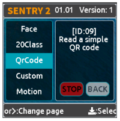
Código QR
{kind=link}
| Etiqueta | ASCII | Etiqueta | ASCII | Etiqueta | ASCII |
|---|---|---|---|---|---|
| 32 | Espacio en blanco | 33 | ! | 34 | " |
| 35 | # | 36 | $ | 37 | % |
| 38 | & | 39 | ‘ | 40 | ( |
| 41 | ) | 42 | * | 43 | + |
| 44 | , | 45 | - | 46 | . |
| 47 | / | 48 | 0 | 49 | 1 |
| 50 | 2 | 51 | 3 | 52 | 4 |
| 53 | 5 | 54 | 6 | 55 | 7 |
| 56 | 8 | 57 | 9 | 58 | : |
| 59 | ; | 60 | < | 61 | = |
| 62 | > | 63 | ? | 64 | @ |
| 65 | A | 66 | B | 67 | C |
| 68 | D | 69 | E | 70 | F |
| 71 | G | 72 | H | 73 | I |
| 74 | J | 75 | K | 76 | L |
| 77 | M | 78 | N | 79 | O |
| 80 | P | 81 | Q | 82 | R |
| 83 | S | 84 | T | 85 | U |
| 86 | V | 87 | W | 88 | X |
| 89 | Y | 90 | Z | 91 | [ |
| 92 | \ | 93 | ] | 94 | ^ |
| 95 | - | 96 | ` | 97 | a |
| 98 | b | 99 | c | 100 | d |
| 101 | e | 102 | f | 103 | g |
| 104 | h | 105 | i | 106 | j |
| 107 | k | 108 | l | 109 | m |
| 110 | n | 111 | o | 112 | p |
| 113 | q | 114 | r | 115 | s |
| 116 | t | 117 | u | 118 | v |
| 119 | w | 120 | x | 121 | y |
| 122 | z | 123 | { | 124 | |
| 125 | } | 126 | ~ |
- Parámetros
Ninguno
- Resultados
Devuelve dos tipos de información, paquete de atributos y datos de caracteres
Resultados obtenidos:
Paquete de atributos
| Resultado | Breve resumen |
|---|---|
| 1 | Coordenada X del centro del código QR |
| 2 | Coordenada Y del centro del código QR |
| 3 | Ancho del código QR |
| 4 | Alto del código QR |
| 5 | Número de caracteres |
Datos de carácter
| Resultado | Breve resumen |
|---|---|
| 1 | Datos de carácter |
| 2 | Datos de carácter |
| 3 | Datos de carácter |
| 4 | Datos de carácter |
| 5 | Datos de carácter |
ID:10 Personalizar¶
Si se activa este modo, el chip WiFi estará funcionando. En el documento WiFi Firmware Developing User Guide v1.1 se dan detalles de configuración del chip.
CUIDADO
Si no sabes bien lo que estás haciendo se desaconseja realizar los pasos descritos en el manual del enlace anterior.
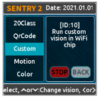
Código QR
{kind=link}
ID:11 Movimiento¶
Compara la diferencia de píxeles de fotogramas adyacentes para determinar si hay una movida en la imagen, devuelve su coordenada y tamaño.
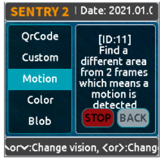
Movimiento
{kind=link}
- Parámetros
Ninguno
- Resultados
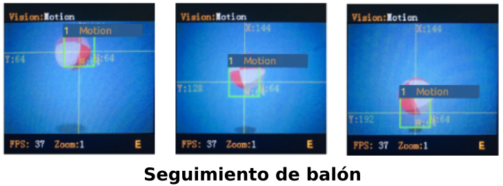
Resultado
{kind=link}
| Resultado | Breve resumen |
|---|---|
| 1 | Coordenada X del centro de la región |
| 2 | Coordenada Y del centro de la región |
| 3 | Ancho de la región |
| 4 | Alto de la región |
| 5 | Ninguno |